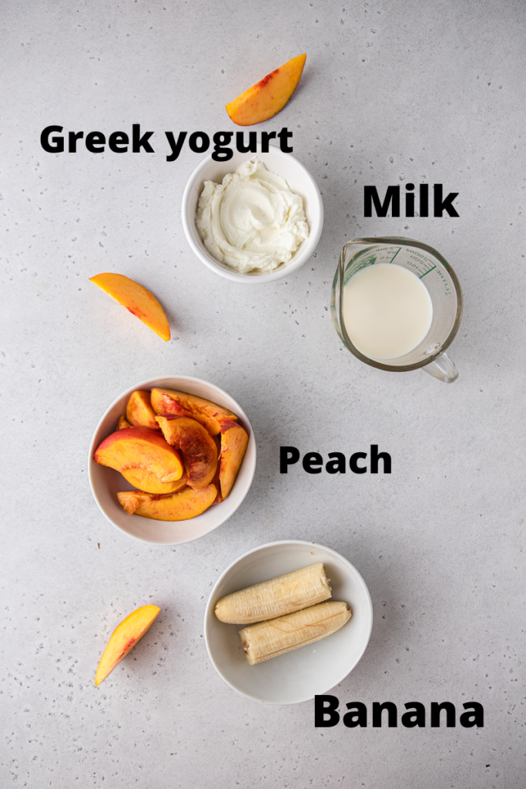

Banana Peach Smoothie

This high-protein 4-ingredient banana peach smoothie is thick, creamy, and tastes just like dessert! It is a great breakfast or snack option that you can throw together in less than 5 minutes.
Ingredients
- Peach I like to use fresh peaches for my peach smoothie because I can control how ripe they are but if you don’t have access to fresh peaches you can always use frozen peaches.
- Banana I use very ripe bananas to make sure that the smoothie is sweet.
- Milk I have used dairy and non dairy milk for this recipe. But for the sake of keeping this smoothie high protein I like to use dairy milk.
- Greek yogurtGreek yogurt is packed with protein, use an unweetened greek yogurt for a creamy and high protein smoothie.

Steps
- Add all your ingredients to a blender and blend until smooth.
- Serve decorate with a peach slice (optional), and enjoy!